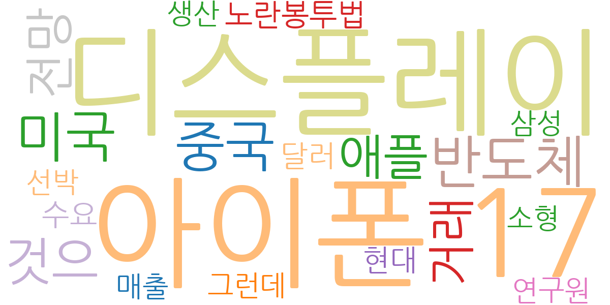
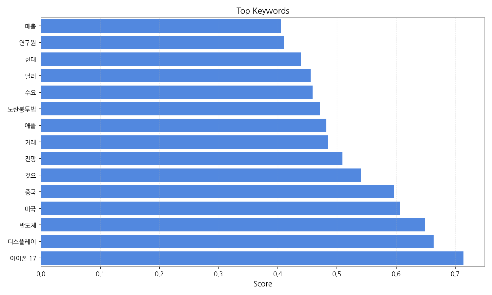
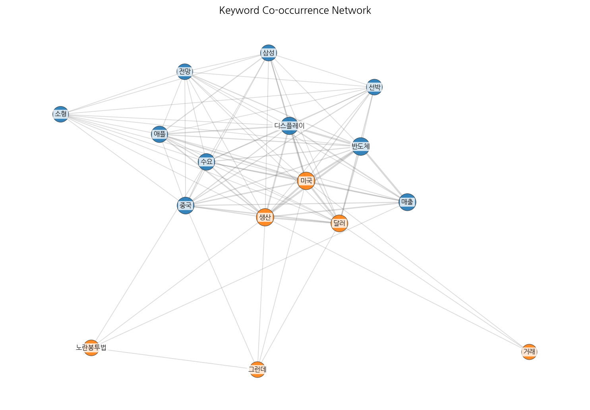
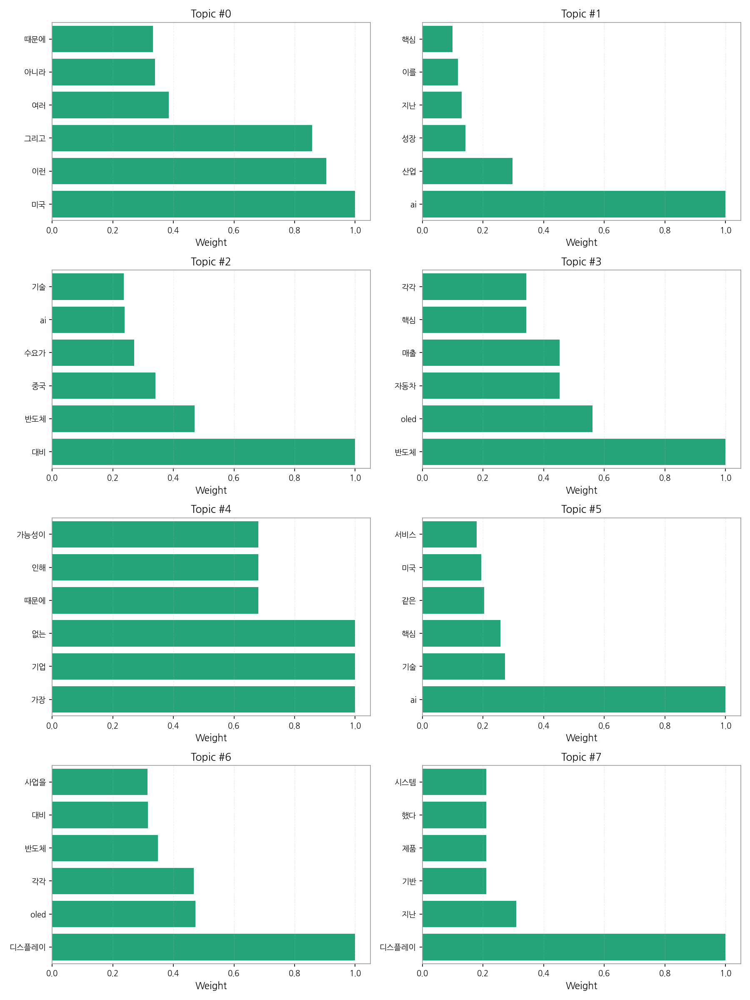
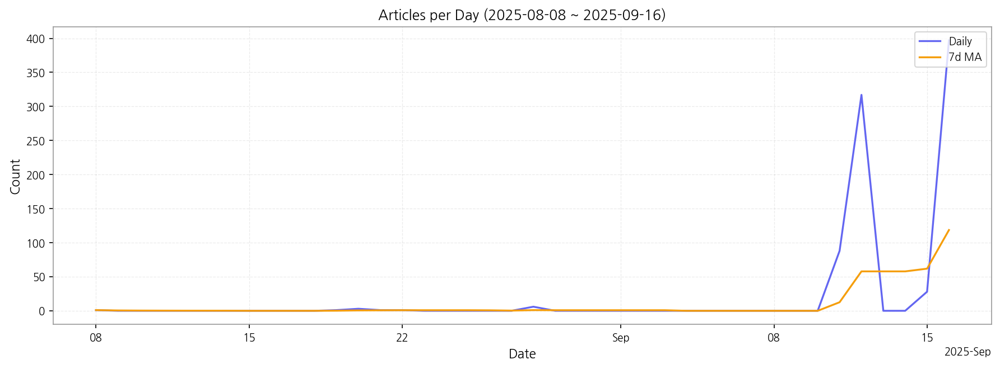

1) 상위 토픽을 3개 주제로 묶어 핵심 맥락을 설명하면 다음과 같습니다. 첫째, 미국과 AI 기술 경쟁 주제는 미국을 중심으로 한 AI 기술 개발 및 경쟁 상황, 그리고 이에 대한 한국의 대응 전략 등을 다룹니다. 둘째, 반도체 및 디스플레이 산업 동향 주제는 반도체, OLED 등 핵심 산업의 생산, 수요, 기술 경쟁력, 그리고 AI와의 연관성에 대한 뉴스를 포함합니다. 마지막으로, AI 산업 성장 및 관련 기술 주제는 AI 기술 자체의 발전, AI 기반 산업의 성장, 그리고 AI 기술이 다른 산업에 미치는 영향 등을 다루고 있습니다. 이 세 가지 주제는 서로 밀접하게 연관되어 있으며, 한국 경제의 미래를 좌우할 핵심 요소들을 반영하고 있습니다.
2) 최근 변화/스파이크를 짚어보면, 9월 11일부터 16일 사이에 기사 수가 급증했습니다. 특히 9월 12일에는 317건의 기사가 등장하여 이전 기간 대비 압도적으로 많은 기사가 생성되었는데, 이는 특정 시점에 발생한 주요 뉴스 사건이나 정책 발표 등으로 인한 것으로 추정됩니다.
3) 실무 인사이트 3가지:

| Rank | Keyword | Score |
|---|---|---|
| 1 | 아이폰 17 | 0.714 |
| 2 | 디스플레이 | 0.663 |
| 3 | 반도체 | 0.649 |
| 4 | 미국 | 0.606 |
| 5 | 중국 | 0.596 |
| 6 | 것으 | 0.541 |
| 7 | 전망 | 0.509 |
| 8 | 거래 | 0.484 |
| 9 | 애플 | 0.482 |
| 10 | 노란봉투법 | 0.472 |
| 11 | 수요 | 0.459 |
| 12 | 달러 | 0.456 |
| 13 | 현대 | 0.439 |
| 14 | 연구원 | 0.410 |
| 15 | 매출 | 0.405 |




1) 상위 토픽을 3개 주제로 묶어 핵심 맥락을 설명하면 다음과 같습니다. 첫째, 미국과 AI 기술 경쟁 주제는 미국을 중심으로 한 AI 기술 개발 및 경쟁 상황, 그리고 이에 대한 한국의 대응 전략 등을 다룹니다. 둘째, 반도체 및 디스플레이 산업 동향 주제는 반도체, OLED 등 핵심 산업의 생산, 수요, 기술 경쟁력, 그리고 AI와의 연관성에 대한 뉴스를 포함합니다. 마지막으로, AI 산업 성장 및 관련 기술 주제는 AI 기술 자체의 발전, AI 기반 산업의 성장, 그리고 AI 기술이 다른 산업에 미치는 영향 등을 다루고 있습니다. 이 세 가지 주제는 서로 밀접하게 연관되어 있으며, 한국 경제의 미래를 좌우할 핵심 요소들을 반영하고 있습니다.
2) 최근 변화/스파이크를 짚어보면, 9월 11일부터 16일 사이에 기사 수가 급증했습니다. 특히 9월 12일에는 317건의 기사가 등장하여 이전 기간 대비 압도적으로 많은 기사가 생성되었는데, 이는 특정 시점에 발생한 주요 뉴스 사건이나 정책 발표 등으로 인한 것으로 추정됩니다.
3) 실무 인사이트 3가지:
| Idea | Target | Value Prop | Score |
|---|---|---|---|
| AI 기반 디스플레이 품질 검사 플랫폼 (KR) | 한국 내 대기업 디스플레이 제조사 (삼성디스플레이, LG디스플레이 등), 중견/중소기업 디스플레이 부품 제조사 | AI 기반 자동화 시스템으로 검사 속도 향상 및 불량률 감소, 인건비 절감. 경쟁사 대비 높은 정확도와 빠른 처리 속도를 제공. 차별화 포인트: 다양한 디스플레이 종류에 대한 학습 데이터를 기반으로 최적화된 검사 알고리즘 제공. | 4.50 |
| 모빌리티 디스플레이 통합 관리 서비스 (KR) | 한국 내 모빌리티 기업 (자율주행차, 전기차 제조사), 디스플레이 유지보수 업체 | 모빌리티 디스플레이 원격 관리 및 유지보수 서비스 제공. 실시간 모니터링 및 문제 진단 기능. 예방적 유지보수를 통한 운영 효율 향상. 차별화 포인트: AI 기반 예측 유지보수를 통해 디스플레이 고장을 미리 예방. | 4.20 |
| AI 기반 사이니지 광고 플랫폼 (JP) | 일본 내 사이니지 광고 대행사, 미디어 기업, 대형 쇼핑몰 및 백화점 운영사 | AI 기반 실시간 광고 효과 분석 및 최적화. 고객 특징 및 선호도를 분석하여 타겟팅된 광고 노출. 차별화 포인트: 다양한 사이니지 형태 및 위치 데이터를 활용한 정교한 타겟팅 및 효과 예측. | 4.00 |
| AI 기반 반도체 수요 예측 데이터 분석 서비스 (JP) | 일본 내 반도체 제조사, 반도체 유통업체 | AI 기반 정확한 반도체 수요 예측 및 데이터 분석 서비스 제공. 시장 동향 및 경쟁사 분석을 통한 예측 정확도 향상. 차별화 포인트: 다양한 데이터 소스를 통합하여 정교한 예측 모델 구축. | 3.80 |
| 전자부품 조달 플랫폼 (EU) | EU 지역 전자 제조업체, 특히 중소기업 | 원스톱 전자 부품 조달 플랫폼 제공. 다양한 공급업체의 부품 정보 통합 제공 및 가격 비교 기능. 신뢰할 수 있는 공급망 확보 지원. 차별화 포인트: AI 기반 부품 수요 예측 및 재고 관리 기능 제공. | 3.50 |